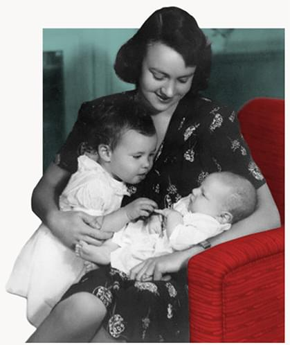
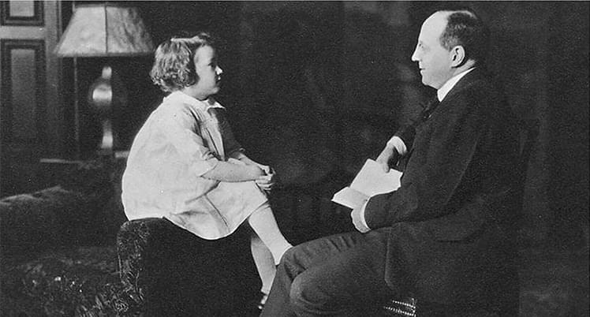
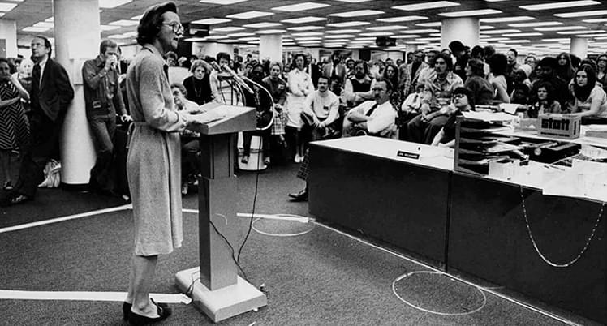
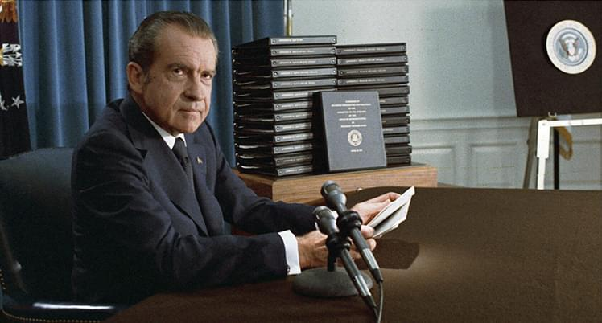
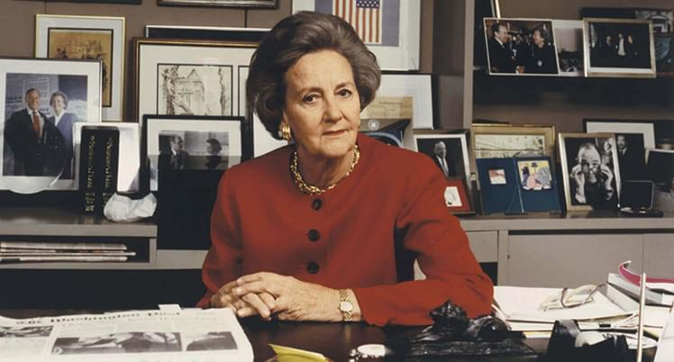
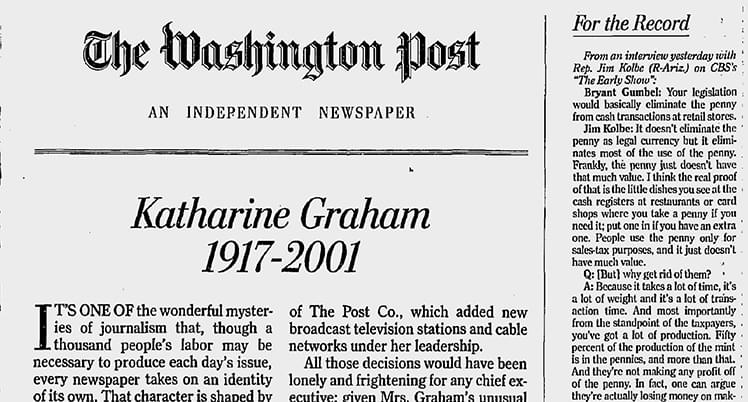

<!DOCTYPE html>
<html lang="en" dir="ltr">
  <head>
    <meta charset="utf-8">
    <meta name="viewport" content="width=device-width, initial-scale=1.0">
    <title>Katharine Graham</title>
    <link rel="preconnect" href="https://fonts.gstatic.com">
    <link href="https://fonts.googleapis.com/css2?family=EB+Garamond:ital,wght@0,400;0,700;1,400;1,700&family=Lato:wght@300;400&display=swap" rel="stylesheet">
    <link rel="stylesheet" type="text/css" href="css/main.min.css">

  </head>
  <body class="body">
    <header class="header">
  <div class="header__title">
    <h1 class="header__title-main">
      Katharine Graham
    </h1>
    <h2 class="header__title-secondary">
      How a self-proclaimed “doormat wife” became the most powerful woman in journalism
    </h2>
  </div>
  <figure class="header__image">
    
    <figcaption class="header__image-caption caption">
      (The Washington Post)
    </figcaption>
  </figure>
</header>
<div>
</div>
    <div class="trigger">
      <main class="text">
  <p class="text__paragraph paragraph p1">
    The resume of Katharine “Kay” Graham—who transformed The Washington Post Company’s business and publishing
    operations into one of the world’s leading newspapers—is nothing short of remarkable.
  </p>
  <p class="text__paragraph paragraph p2">
    She was one of the first female publishers of an American newspaper and the first-ever female chief executive
    officer of a Fortune 500 company. Graham defied the U. S. government to publish both the Pentagon Papers and the
    Watergate story, two of the century’s biggest scoops. During the decades she directed The Washington Post Company’s
    business, revenue grew by more than $1 billion and the stock price soared, solidifying Graham’s status as one of the
    country’s most savvy business leaders. In later life, she proved a talented storyteller in her own right, winning a
    Pulitzer Prize for her autobiographical narrative, “Personal History.”
  </p>
  <p class="text__paragraph paragraph p3">
    But until her mid-40s, Graham saw herself only as an obedient daughter and self-described “doormat wife,” with no
    real career prospects or sense of professional autonomy. That all changed when her husband, Philip Graham—president
    and former publisher of The Washington Post—killed himself, thrusting his wife into a role she never imagined she
    was qualified to hold.
  </p>
  <q class="text__quote">
    “She was always recognized as anicon and a pioneer to women and journalists of my generation.”
  </q>
  <span class="text__quote-author">
    — ALICIA SHEPARD, FORMER NPR OMBUDSMAN AND AUTHOR
  </span>
  <p class="text__paragraph paragraph p4">
    Surprising her male colleagues as well as herself, she embraced her new role long before “lean in” became a rallying
    cry for professional women. Her bold leadership of The Washington Post in the 1970s changed the course of American
    journalism, but like so many female leaders through history, she’s often been overlooked. She got only one mention
    in the film “All The President’s Men”—an otherwise detailed account of the Watergate scoop.
  </p>
  <p class="text__paragraph paragraph p5">
    “The Post” puts Graham back in the spotlight, reminding viewers of the impact female leaders can have when given the
    opportunity, said Alicia Shepard, former NPR ombudsman and author of “Woodward and Bernstein: Life in the Shadow of
    Watergate.”
  </p>
  <p class="text__paragraph paragraph p6">
    “She was always recognized as an icon and pioneer to women and journalists of my generation,” she said. “What she’s
    getting is second showing—a comeback act, if you will.”
  </p>
</main>
      <section class="biography">
  <figure class="biography__image">
    
    <figcaption class="biography__image-caption caption">
      (Courtesy of the Graham Family)
    </figcaption>
  </figure>
  <div class="biography__text">
    <h2 class="biography__text-headline">
      The “doormat wife”
    </h2>
    <p class="biography__text-paragraph paragraph p7">
      Graham was born in 1917 to enormous wealth and privilege. Her multi-millionaire financier father purchased The
      Washington Post at a bankruptcy auction in 1933 and eventually appointed his son-in-law publisher, giving Phillip
      more shares of stock in the company than his daughter.
    </p>
    <p class="biography__text-paragraph paragraph p8">
      Graham took it in stride. “As Dad explained to me, no man should be in the position of working for his wife,” she
      wrote in her memoir. “Curiously, I not only concurred but was in complete accord with this idea.” She often
      deferred to her husband, and she became a kind of second-class citizen in her marriage, Graham wrote, habitually
      putting Philip’s ambitions and desires above her own.
    </p>
    <p class="biography__text-paragraph paragraph p9">
      “As he emerged more on the journalistic and political scenes,I increasingly saw my role as the tail to his
      kite—and the moreI felt overshadowed, the more it became a reality,” Graham wrote.
    </p>
    <p class="biography__text-paragraph paragraph p10">
      And then, after years of living with manic depression, Philip took his own life.
    </p>
  </div>
</section>
    </div>
    <section class="events">
  <span class="events__title">
    Key events
  </span>
  <span class="events__info">
    Click the arrows to viewthe timeline events.
  </span>

  <div class="events__slider">
    <div class="slider__items">
      <!-- item 1 -->
      <div class="item">
        <figure>
          
          <figcaption class="item-caption">
            (Courtesy of the Graham Family)
          </figcaption>
        </figure>
        <div class="item-text">
          <span class="item-text--year">
            1917
          </span>
          <p class="item-text--paragraph">
            Katharine Meyer was born in New York City, the fourth of five children. Her wealthy father purchased The
            Washington Post in 1933.
          </p>
        </div>
      </div>

      <!-- item 2 -->
      <div class="item">
        <figure>
          

        </figure>
        <div class="item-text">
          <span class="item-text--year">1940</span>
          <p class="item-text--paragraph">
            Two years after graduating college, she married Philip Graham, a Supreme Court law clerk. The pair went on
            to have four children.
          </p>
        </div>
      </div>

      <!-- item 3 -->
      <div class="item">
        <figure>
          
          <figcaption class="item-caption">
            (The Washington Post, photo taken in 1975)
          </figcaption>
        </figure>
        <div class="item-text">
          <span class="item-text--year">1963</span>
          <p class="item-text--paragraph">
            Katherine Graham took the reins at The Washington Post immediately after Philip killed himself. At the top
            of the organization, she was surrounded almost entirely by male editors and business executives.
          </p>
        </div>
      </div>

      <!-- item 4 -->
      <div class="item">
        <figure>
          
        </figure>
        <div class="item-text">
          <span class="item-text--year">1971</span>
          <p class="item-text--paragraph">
            Graham authorizes publication of the Pentagon Papers, the secret 7,000-page government document on the
            Vietnam war—just two days after she takes The Washington Post public on June 15.
          </p>
        </div>
      </div>

      <!-- item 5 -->
      <div class="item">
        <figure>
          
          <figcaption class="item-caption">
            (National Archives & Records Administration)
          </figcaption>
        </figure>
        <div class="item-text">
          <span class="item-text--year">1974</span>
          <p class="item-text--paragraph">
            President Richard Nixon resigned (two years after The Washington Post began reporting on the Watergate
            scandal, and after Graham withstood threats from the Nixon administration warning her not to publish).
          </p>
        </div>
      </div>

      <!-- item 6 -->
      <div class="item">
        <figure>
          
          <figcaption class="item-caption">
            (Diana Walker/Contour by Getty Images)
          </figcaption>
        </figure>
        <div class="item-text">
          <span class="item-text--year">1917</span>
          <p class="item-text--paragraph">
            Graham’s memoir, “Personal History,” was published to acclaim. One year later, it won the Pulitzer Prize.
          </p>
        </div>
      </div>

      <!-- item 7  -->
      <div class="item">
        <figure>
          
          <figcaption class="item-caption">
            (The Washington Post)
          </figcaption>
        </figure>
        <div class="item-text">
          <span class="item-text--year">2001</span>
          <p class="item-text--paragraph">
            Graham died at age 84. In a statement issued at the time of her death, President George W. Bush hailed her
            as the first lady of American journalism.
          </p>
        </div>
      </div>
    </div>
    <!-- nav -->
    <div class="slider__nav">
      <button class="slider__nav-arrow slider__nav-arrow--prev" id="arrow-prev"></button>
      <button class="slider__nav-arrow slider__nav-arrow--next" id="arrow-next"></button>
    </div>
    <!-- dots  -->
    <ul id="slider__dots">
    </ul>
    <!-- years  -->
    <ul id="slider__timeline">
    </ul>
  </div>

</section>
    <footer class="footer">
  <span class="footer__text">
    <strong>Sources:</strong> Biography.com, “Personal History,” Neiman Reports, Pew, CNN, The New Yorker
  </span>
</footer>
    <div class="trigger"></div>
    <script src="https://cdnjs.cloudflare.com/ajax/libs/gsap/3.3.3/gsap.min.js"></script>
    <script src="https://s3-us-west-2.amazonaws.com/s.cdpn.io/16327/SplitText3.min.js"></script>
    <script src="https://cdnjs.cloudflare.com/ajax/libs/gsap/3.3.3/ScrollTrigger.min.js"></script>
    <script src="js/script.js"></script>
  </body>
</html>
